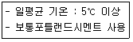
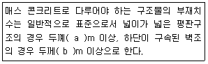
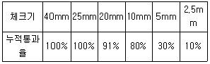
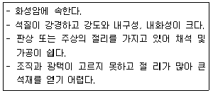
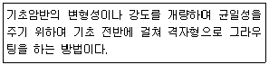
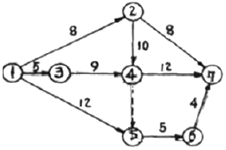
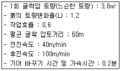
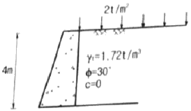

건설재료시험산업기사 (2017-03-05 기출문제)
1과목: 콘크리트공학
1. 고강도콘크리트에 대한 설명으로 틀린 것은?
- 설계기준압축강도가 보통(중량) 콘크리트에서 35MPa이상인 경우의 콘크리트를 고강도 콘크리트라고 한다.
- 고강도콘크리트에 사용되는 굵은 골재의 최대 차수는 40mm 이하로서 가능한 25mm 이하로 하여야 한다.
- 잔골재율은 소요의 워커빌리티를 얻도록 시험에 의하여 결정하여야 하며, 가능한 적게 하도록 한다.
- 기상의 변화가 심하거나 동결융해에 대한 대책이 필요한 경우를 제외하고는 공기 연행제를 사용하지 않은 것을 원칙으로 한다.
(정답률: 76%)

2. 프리플레이스트는 콘크리트의 특징으로 틀린 것은?
- 투수성이 낮다.
- 블리딩 및 레이턴스가 작다.
- 수축률이 크다.
- 수중 콘크리트에 적합하다.
(정답률: 56%)
3. 일정량의 AE제를 사용한 경우 굳지 않은 콘크리트에 연행되는 공기량에 대한 설명으로 틀린 것은?
- 콘크리트의 온도가 높을수록 공기량은 많다.
- 물-시멘트비가 클수록 공기량은 많다.
- 시멘트의 분말도가 증가할수록 공기량은 많다.
- 단위 잔골재량이 많을수록 공기량은 많다.
(정답률: 60%)
4. 콘크리트의 크리프(Creep)에 대한 설명으로 틀린 것은?
- 부재치수가 작을수록 크리프가 커진다.
- 온도가 높을수록 크리프는 커진다.
- 재하시 재령이 클수록 크리프는 커진다.
- 양호한 배합의 경우 물-시멘트비가 클수록 크리프는 커진다.
(정답률: 70%)
5. 일반 수중콘크리트에 대한 설명 중 잘못된 것은?
- 물-결합재비는 50% 이하를 표준으로 한다.
- 단위시멘트량은 370kg/m3 이상을 표준으로 한다.
- 타설할 때 완전히 물막이를 할 수 없는 경우에도 유속이 1초당 50mm 이하로 제한하여야 한다.
- 트래미 1개로 타설할 수 있는 수중콘크리트의 면적은 100m2 정도로 계획하는 것이 좋다.
(정답률: 71%)
6. 시방배합결과 물 170kg/m3, 시멘트 350kg/m3, 잔골재 700kg/m3, 굵은골재 1000kg/m3을 얻었다. 현장에서 골재의 입도는 시방배합에서 가정한 것과 동일하고 잔골재 및 굵은골재의 표면수가 각각 3%와 1%일 경우 현장배합상의 단위수량은?
- 1290kg/m3
- 139kg/m3
- 191kg/m3
- 210kg/m3
(정답률: 77%)
7. 프리스트레스트 콘크리트 부재에서 프리텐션 방식의 장점이 아닌 것은?
- 제품의 품직에 대한 신뢰도가 높다.
- PS강재의 곡선 배치가 용이하다.
- 정착장치가 불필요하다.
- 공장에서 대량의 제조가 가능하다.
(정답률: 70%)
8. 확대기초, 보, 기둥 등의 측면 거푸집널의 해체시기로 옳은 것은?
- 3MPa 이상
- 설계기준압축강도의 1/5배 이상
- 설계기준압축강도의 2/5배 이상
- 5MPa 이상
(정답률: 82%)
9. 아래 표의 조건과 같을 경우 습윤양생 기간의 표준으로 옳은 것은?(오류 신고가 접수된 문제입니다. 반드시 정답과 해설을 확인하시기 바랍니다.)

- 3일
- 5일
- 7일
- 28일
(정답률: 51%)
10. 콘크리트의 압축강도시험에 대한 설명으로 틀린 것은?
- 공시체는 지름의 2배 높이를 가진 원기둥으로 한다.
- 공시체 몰드에 콘크리트를 채울 때 콘크리트는 2층 이상으로 거의 동일한 두께로 나눠서 채운다.
- 공시체 캐핑을 위한 시멘트 페이스트의 물-시멘트 비는 27~30%로 한다.
- 하중을 가하는 속도는 압축 응력도의 증가율이 매초 (0.06±0.04)MPa이 되도록 한다.
(정답률: 74%)
11. 쪼갬인장시험을 실시하기 위하여 ø150×300mm의 원주형 공시체로 시험한 결과 재하 하중(P)이 176.7kN에서 공시체가 파괴 되었다. 쪼갬인장 강도는?
- 2.0MPa
- 2.5MPa
- 4.5MPa
- 5.0MPa
(정답률: 81%)
12. 콘크리트 품질관리 4단계 싸이클의 각 단계가 아닌 것은?
- 실시(Do)
- 적용(Apply)
- 검사(Check)
- 계획(Plan)
(정답률: 70%)
13. 콘크리트에 시공 이음을 두는 경우가 아닌 것은?
- 거푸집과 동바리를 연속으로 사용하는 경우
- 철근 조립을 일체로 할 수 없을 경우
- 댐과 같이 단면이 커서 수화열의 피해를 줄이기 위한 경우
- 기존에 타설된 콘크리트에 충분한 양생기간을 주기 위한 경우
(정답률: 55%)
14. 콘크리트 구조물의 내하력을 향상시키는 보강공법이 아닌 것은?
- 표면처리공법
- 단면증설공법
- 강판접착공법
- 프리스트레스 도입공법
(정답률: 75%)
15. 일반적인 철근 콘크리트(RC)와 비교한 프리스트레스트 콘크리트(PSC)의 특징을 설명한 것으로 틀린 것은?
- 내구성 및 수밀성이 양호하다.
- 고강도 강재를 사용하므로 내화성에 있어서 불리하다.
- 전단면을 유효하게 이용할 수 있어 경량의 구조가 가능하다.
- 강성이 크므로 변형이 작고 진동이 거의 없는 구조가 대부분이다.
(정답률: 51%)
16. 경량골재, 콘크리트에 대한 설명으로 틀린 것은?
- 전동기를 사용해서 다짐하는 것은 좋지 않다.
- 골재의 프리웨팅(pre-wetting)이 필요하다.
- 슬럼프가 일반적으로 작게 나오는 경향이 있다.
- 건조균열을 일으키기 쉽기 때문에 양생중습윤상태를 유지하도록 특히 주의한다.
(정답률: 75%)
17. 매스 콘크리트에 대한 아래의 설명에서 ()안에 알맞은 값으로 옳은 것은?

- (a)0.5, (b)0.5
- (a)0.5, (b)0.8
- (a)0.8, (b)0.5
- (a)0.8, (b)0.8
(정답률: 77%)
18. 콘크리트 압축강도의 시험 기록이 없는 현장에서 설계기준 압축강도(fck)24MPa인 콘크리트를 제조하기 위한 배합강도(fcr)는?
- 29MPa
- 31MPa
- 32.5MPa
- 34.5MPa
(정답률: 85%)
19. 시방배합에서 잔골재율(S/a)이 43%, 잔골재의 표건상태에서의 밀도는 2.6g/cm3이다. 이 시방배합에 사용된 골재의 절대용적이 660L이면 단위 잔골재량은 얼마인가?
- 708kg
- 718kg
- 728kg
- 738kg
(정답률: 64%)
20. 콘크리트의 비빔시간은 일반적으로 가경식믹서의 경우와 강제식 믹서의 경우 얼마 이상은 표준비빔시간으로 하는가?
- 가경식 믹서:1분 30초, 강제식 믹서:1분
- 가경식 믹서:1분, 강제식 믹서:1분 30초
- 가경식 믹서:2분 30초, 강제식 믹서:1분 30초
- 가경식 믹서:1분 30초, 강제식 믹서:2분 30초
(정답률: 88%)
2과목: 건설재료 및 시험
21. 강의 화학성분 중 인(P)이 많으면 증가하는 성질은?
- 인성
- 탄성
- 휨성
- 취성
(정답률: 69%)
22. 골재실험결과 골재의 단위용적질량이 1.7t/m3, 밀도가 2.65g/cm3였을 때 이골재의 공극률은?
- 35.85%
- 64.15%
- 57.26%
- 42.74%
(정답률: 48%)
23. 합판의 특징에 대한 설명으로 틀린 것은?
- 목재의 완전 이용이 가능하다.
- 곡면으로 된 판을 얻을 수 없다.
- 폭이 넓은 판을 쉽게 얻을 수 있다.
- 팽창, 수축 등에 의한 결점이 없고 방향에 따른 강도의 차이가 없다.
(정답률: 69%)
24. 잔골재와 굵은골재의 조립률이 각각 2.5, 7.5이고 혼합비율이 1:1.5인 혼합 골재의 조립률(FM)은?
- 13.8
- 10.0
- 5.5
- 3.0
(정답률: 72%)
25. 혼화재로서 실리카 퓸을 사용한 콘크리트에 대한 설명으로 틀린 것은?
- 콘크리트가 치밀한 구조로 된다.
- 단위수량을 줄일 수 있고, 건조수축에 대한 저항성이 향상된다.
- 알칼리 골재반응의 억제효과 및 강도증가 등을 기대할 수 있다.
- 콘크리트의 재료분리 저항성, 내화학약품성이 향상된다.
(정답률: 41%)
26. 시멘트의 성분 중에서 석고를 사용하는 목적은?
- 강도의 증진을 위해서
- 응결시간 조절을 위해서
- 흡수성을 높이기 위해서
- 워커빌리티의 증진을 위해서
(정답률: 78%)
27. 타르(tar)에 대한 설명으로 잘못된 것은?
- 석유원유, 석탄, 수목 등의 유기물을 건류 또는 증류할 때 만들어지는 휘발성 액상물질의 타르이다.
- 타르의 종류로는 콜타르, 피치, 가스 타르 및 표장용 타르 등이 있다.
- 포장용 타르는 온도변화에 의한 점도의 변화가 크다.
- 포장용 타르는 스트레이스 아스팔트와 성질이 매우 유사하여 시공 및 취급에 있어서 차이가 없다.
(정답률: 71%)
28. 어래 표와 같은 골재 체가름 성과표에 의하면 굵은 골재 최대치수는?

- 40mm
- 25mm
- 20mm
- 10mm
(정답률: 71%)
29. AE 콘크리트의 특성에 관한 설명 중 옳은 것은?
- 콘크리트의 단위중량이 감소하고 철근과의 부착강도가 약화된다.
- 동결 융해에 대한 저항성이 작아지고 수축성도 적게 된다.
- 블리딩(Bleeding)이 감소하고 수밀성도 감소한다.
- 워커빌리티는 양호해지나 재료의 분리가 잘 일어난다.
(정답률: 36%)
30. 하중이 반복 작용하여 재료가 정적강도보다 낮은 강도에서 파괴되는 현상은?
- 릴렉세이션
- 크리프파괴
- 연성파괴
- 피로파괴
(정답률: 82%)
31. 르샤틀리에(Le Chatelier) 비중병의 0.5cc 눈금까지 광유를 주입하고 시료로 시멘트 64g을 넣은 후 비중병의 눈금이 21.5cc로 증가되었다면 이 시멘트의 비중은?
- 2.96
- 3.⑤
- 3.12
- 3.19
(정답률: 71%)
32. 콘크리트용 골재에 요구되는 성질에 대한 설명으로 틀린 것은?
- 물리적, 화학적으로 안정하며 내구성이 커야 한다.
- 크고 작은 입자의 혼합상태가 적절해야 한다.
- 깨끗하며, 입형이 편평해야 한다.
- 소요의 중량을 가져야 한다.
(정답률: 88%)
33. 아스팔트 혼합재에 투입되는 필러(filler)란 No.200체를 70% 이상 토오가하는 돌가루로써 이를 혼합하는 목적은?
- 내구성을 향상시키려고
- 감온성을 크게 하려고
- 신도를 낮추려고
- 점도를 높이려고
(정답률: 45%)
34. 토목섬유재료인 EPS 블록은 고분자 재료 중 어떤 원료가 주재료인가?
- 폴리에틸렌
- 폴리아미드
- 폴리프로필렌
- 폴리스티렌
(정답률: 35%)
35. 다음 암석 중 압축강도가 가장 작은 것은?
- 대리석
- 응회암
- 화강암
- 안산암
(정답률: 78%)
36. 폭발력이 강하고 수중에서도 폭발할 수 있는 다이나마이트(dynamite)는?
- 분상 다이나마이트
- 규조토 다이나마이트
- 교질 다이나마이트
- 스트레이트 다이나마이트
(정답률: 81%)
37. 혼합시멘트 중에서 알루미나시멘트에 관한 설명 중 옳지 않은 것은?
- 해수 또는 화학작용을 받는 곳에서는 저항이 크다.
- 발열량이 대단히 많으므로 양생할 때 주의해야 한다.
- 조기강도가 작으나 장기강도는 보통포틀랜드시멘트보다 상당히 크다.
- 열분해 온도가 높으므로 내화용 콘크리트에 적합하다.
(정답률: 87%)
38. 천연석유가 지층의 갈라진 틈에 침입한 후 지열이나 공기 등의 작용으로 오랜 세월 사이에 그 내부에 중합, 축합 반응을 일으켜 생긴 것은?
- 아스팔타이트
- 레이크아스팔트
- 록아스팔트
- 샌드아스팔트
(정답률: 72%)
39. 아래의 표에서 설명하는 석재는?

- 안삼암
- 화강암
- 현무암
- 석회암
(정답률: 64%)
40. 워커빌리티 증진에 도움이 되지 않는 혼화재료는?
- AE제
- 감수제
- 염화칼슘
- 플라이애쉬
(정답률: 81%)
3과목: 건설시공학
41. 아스팔트 포장에 대한 설명으로 틀린 것은?
- 콘크리트 포장과 비교하여 유지 보수 비용이 적게 든다.
- 주행성이 콘크리트 포장의 경우보다 좋다.
- 양생기간이 짧아 시공 후 즉시 교통 개방이 가능하다.
- 표층에 가해지는 차량하중을 원지반인 노상에 분산시켜 하중을 절감하는 형식이다.
(정답률: 76%)
42. 모래층에 널말뚝을 설치하여 물막이 공사를 하려고 한다. 이 때 예상되는 분사현상에 대한 설명 중 옳지 않은 것은?
- 분사현상이 발생하는 한계의 값을 한계동수구배(ic)라고 한다.
- 분사현상을 방지하기 위하여 느슨한 모래로 대체하는 것이 효과적이다.
- 분사현상은 침투수압이 모래의 유효응력보다 큰 경우에 발생한다.
- 분사현상의 방지 목적으로 널말뚝을 더 깊게 박아 침투경로를 길게 해 준다.
(정답률: 86%)
43. 심빼기 발파공의 종류가 아닌 것은?
- 번 컷
- 벤치 컷
- 스윙 컷
- 피라미드 컷
(정답률: 60%)
44. 아스팔트 포장 중 실 코트(seal coat)의 목적이 아닌 것은?
- 포장면의 수밀성 증대
- 포장면의 미끄럼저항 증대
- 포장면의 내구성 증대
- 포장면의 모관상승 차단
(정답률: 67%)
45. 옹벽의 외력에 대한 안정조건에 대한 설명으로 틀린 것은?
- 전도에 대해 안정해야 한다.
- 활동에 대해 안정해야 한다.
- 지반 지지력에 대해 안정해야 한다.
- 옹벽의 근입 깊이를 최소로 해야 한다.
(정답률: 79%)
46. 토량 변화율 L=1.25, C=0.9인 사질토를 가지고 36000m3를 성토할 경우 굴착토량을 구하면?
- 28800m3
- 40000m3
- 45000m3
- 50000m3
(정답률: 49%)
47. 용수, 배수, 운하 등 성질이 다른 수로가 교하하지만 합류시킬 수 없을 때 또는 수로교로서는 안 될 때에 사용하면 편리한 것은?
- 다공관거
- 집수거
- 사이펀관거
- 섶앞거
(정답률: 85%)
48. 교량 공사 시 동바리를 설치하지 않고 이미 만들어진 교각으로부터 좌우로 평형을 유지하면서 이동식 작업차를 이용하여 3~5m길이를 순차적으로 시공한 후 경간 중앙부에서 캔틸레버 구조물을 힌지나 강결로 연결하는 공법은?
- M.S.S
- I.L.M
- F.C.M
- F.S.M
(정답률: 51%)
49. 댐의 기초처리공법 중 아래의 표에서 설명하는 공법은?

- 커튼 그라우팅
- 블랭킷 그라우팅
- 콘솔리데이션 그라우팅
- 콘택트 그라우팅
(정답률: 71%)
50. 토공현장의 다짐토를 판정하는 방법으로 적절하지 못한 것은?
- 투수계수
- 상대다짐
- 상대밀도
- 포화도 또는 공기함유율
(정답률: 62%)
51. 흙 댐(earth dam)의 특성에 대한 설명으로 틀린 것은?
- 안전율을 확실히 계산할 수 있다.
- 석토용 재료의 구입이 용이하며 경제적이다.
- 높은 댐을 축조하기 어렵다.
- 기초지반이 비교적 견고하지 않더라도 시공가능하다.
(정답률: 80%)
52. 어떤 공사를 실행하는데 있어서 필요한 시간을 추정하니 다음과 같았다. 기대시간(te)은? (단, 낙관시간(a):10일, 정상시간(m):15일 비관시간(b):26일
- 10일
- 13일
- 16일
- 19일
(정답률: 75%)
53. 동결지수가 324℃ㆍday이고 정수 C값이 3.5일 때 이 지역의 동결 깊이는? (단, 데라다의 공식을 이용한다.)
- 26cm
- 46cm
- 63cm
- 92cm
(정답률: 59%)
54. 교량의 위치 선정에 대한 설명으로 옳지 않은 것은?
- 하천과 그 양안의 지질이 양호한 곳에 선정할 것
- 가능한 하천폭이 좁은 곳을 선택할 것
- 하상의 구배가 급변하는 곳은 가급적 피할 것
- 교각의 축방향은 수류의 방향에 수직으로 할 것
(정답률: 65%)
55. 24000m3의 토사를 6m3덤프트럭으로 운반할 때, 1일 운반가능 횟수가 20회이며 10일간 전량을 운반하려면, 1일 당 몇 대의 트럭이 소요되는가?
- 10대/일
- 20대/일
- 30대/일
- 40대/일
(정답률: 88%)
56. 그림의 Net work에서 critical path는? (단, activity상의 숫자는 소요기간을 표시)

- ①→②→⑦
- ①→②→④→⑦
- ①→③→④→⑦
- ①→③→④→⑤→⑥→⑦
(정답률: 66%)
57. 현장타설 콘크리트말뚝에 속하지 않는 것은?
- 프랭키 말뚝
- 페데스탈 말뚝
- 레이먼드 말뚝
- 원심력 철근콘크리트 말뚝
(정답률: 47%)
58. 터널 외형 단면보다 약간 큰 단면을 가진 강제틀을 추진시켜 굴착하고 후방에서 조립된 아치를 1차 라이닝으로 하는 터널 굴진공법으로 용수를 동반하는 연약지반에 적합한 터널공법은?
- T.B.M 공법
- 쉴드(Shirld)공법
- 침매터널 공법
- NATM 공법
(정답률: 77%)
59. 아래 표와 같은 작업조건일 경우 불도저 운전1시간당의 작업량(본바닥 토량)은 약 얼마인가?

- 50m3/h
- 55m3/h
- 60m3/h
- 65m3/h
(정답률: 33%)
60. 다음 다짐기계 중 탬핑롤러에 속하지 않는 것은?
- 머캐덤 롤러
- 쉽스 풋 롤러
- 그리드 롤러
- 테퍼 풋 롤러
(정답률: 58%)
4과목: 토질 및 기초
61. 흐트러진 흙을 자연 상태의 흙과 비교하였을 때 잘못된 설명은?
- 투수성이 크다.
- 간극이 크다.
- 전단강도가 크다.
- 압축성이 크다.
(정답률: 57%)
62. 그림과 같은 옹벽에 작용하는 전체 주동토압을 구하면?

- 8.15t/m
- 7.25t/m
- 6.55t/m
- 5.72t/m
(정답률: 53%)
63. 모래 지반에 30cm×30cm 크기로 재하시험을 한 결과 20t/m2의 극한지지력을 얻었다. 3m×3m의 기초를 설치할 때 기대되는 극한 지지력은?
- 100t/m2
- 150t/m2
- 200t/m2
- 300t/m2
(정답률: 57%)
64. 점토지반에서 Nc치로 추정할 수 있는 사항이 아닌 것은?
- 상대밀도
- 컨시스턴시
- 일축압축강도
- 기초지반의 허용지지력
(정답률: 54%)
65. 점토의 예민비(sensitivity ratio)를 구하는데 사용되는 시험방법은?
- 일축압축시험
- 삼축압축시험
- 직접전단시험
- 베인전단시험
(정답률: 68%)
66. 다음 중 흙의 투수계수에 영향을 미치는 요소가 아닌 것은?
- 흙의 입경
- 침투액의 점성
- 흙의 포화도
- 흙의 비중
(정답률: 59%)
67. 4m×6m 크기의 직사각형 기초에 10t/m2의 등분포 하중이 작용할 때 기초 아래 5m깊이에서의 지중응력 증가량을 2:1분 포법으로 구한 값은?
- 1.42t/m2
- 1.82t/m2
- 2.42t/m2
- 2.82t/m2
(정답률: 34%)
68. 다음 중 직접기초에 속하는 것은?
- 후팅기초
- 말뚝기초
- 피어기초
- 케이슨기초
(정답률: 48%)
69. 비중이 2.65, 간극률이 40%인 모래지반의 한계 동수경사는?
- 0.99
- 1.18
- 1.59
- 1.89
(정답률: 35%)
70. 흙의 분류방법 중 통일분류법에 대한 설명으로 틀린 것은?
- #200(0.075mm)체 통과율이 50%보다 작으면 조립토이다.
- 조립토 중 #4(4.75mm)체 통과율이 50%보다 작으면 자갈이다.
- 세립토에서 압축성의 높고 낮음을 분류할 때 사용하는 기준은 액성한계 35%이다.
- 세립토를 여러 가지로 세분하는 데는 액성한계와 소성지수의 관계 및 범위를 나타내는 소성도표가 사용된다.
(정답률: 67%)
71. 1m3의 포화점토를 채취하여 습윤단위무게와 함수비를 측정한 결과 각각 1.68/m3와 60%였다. 이 포화점토의 비중은 얼마인가?
- 2.14
- 2.84
- 1.58
- 1.31
(정답률: 56%)
72. 실내다짐시험 결과 최대건조 단위무게가 1.56t/m3이고, 다짐도가 95%일 때 현장건조 단위무게는 얼마인가?
- 1.36t/m3
- 1.48t/m3
- 1.60t/m3
- 1.64t/m3
(정답률: 64%)
73. 다음 중 흙의 다짐에 대한 설명으로 틀린 것은?
- 흙이 조립토에 가까울수록 최적함수비는 크다.
- 다짐에너지를 증가시키면 최적함수비는 감소한다.
- 동일한 흙에서 다짐에너지가 클수록 다짐효과는 증대한다.
- 최대건조단위중량은 사질토에서 크고 점성토일수록 작다.
(정답률: 31%)
74. 다음 중에서 사운딩(sounding)이 아닌 것은?
- 표준관입시험(standard penetration test)
- 일축압축시험(unconfined compression test)
- 원추관입시험(cone penetrometer test)
- 베인시험(vane test)
(정답률: 36%)
75. 흙 댐에서 상류측이 가장 위험하게 되는 경우는?
- 수위가 점차 상승할 때이다.
- 댐이 수위가 중간정도 되었을 때이다.
- 수위가 갑자가 내려갔을 때이다.
- 댐내의 흐름이 정상 침투일 때이다.
(정답률: 71%)
76. 투수계수에 관한 설명으로 잘못된 것은?
- 투수계수는 수두차에 반비례한다.
- 수온이 상승하면 투수계수는 증가한다.
- 투수계수는 일밙적으로 흙의 입자가 작을수록 작은 값을 나타낸다.
- 같은 종류의 흙에서 간극비가 증가하면 투수계수는 작아진다.
(정답률: 35%)
77. 양면배수 조건일 때 일정한 양의 압밀침하가 발생하는데 10년이 걸린다면 일면배수 조건일 때 같은 침하가 발생되는 데 몇 년이나 걸리겠는가?
- 5년
- 10년
- 30년
- 40년
(정답률: 53%)
78. 접지압의 분포가 기초의 중앙부분에 최대응력이 발생하는 기초형식과 지반은 어느 것인가?
- 연성기초, 점성지반
- 연성기초, 사질지반
- 강성기초, 점성지반
- 강성기초, 사질기반
(정답률: 55%)
79. 연약 점토 지반에 말뚝 재하 시험을 가는 경우 말뚝을 타입한 후 20여일이 지난 다음 재하 시험을 하는 이유는?
- 말뚝 주위 흙이 압축되었기 때문
- 주면 마찰력이 작용하기 때문
- 부 마찰력이 생겼기 때문
- 타입시 말뚝 주변의 흙이 교란되었기 때문
(정답률: 71%)
80. 점토지반에 과거에 시공된 성토제방이 이미 안정된 상태에서, 홍수에 대비하기 위해 급속히 성토시공을 하고자 한다. 안정검토를 위해 지반의 강도정수를 구할 때, 가장 적합한 시험방법은?
- 직접전단시험
- 압밀 배수시험
- 압밀 비배수시험
- 비압밀 비배수시험
(정답률: 66%)